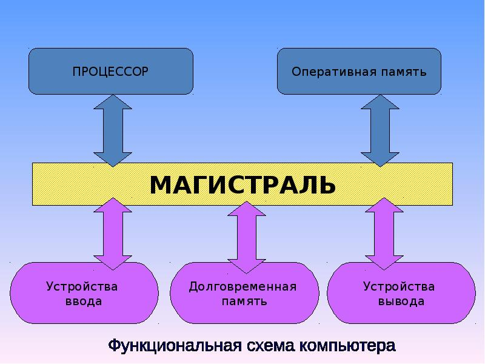
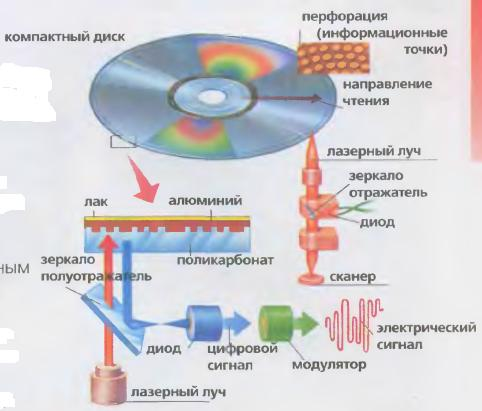
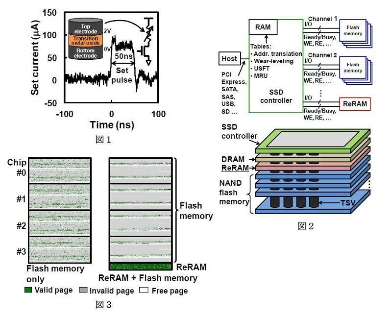

На этой лекции мы разберёмся с тем, как именно работают переменные в Python, где они находятся и какие с ними можно выполнять операции.
На картинке ниже представлено устройство компьютера. Как Вы думаете, где именно хранятся переменные значения программы?
Ответ (выделить): Оперативная память
В зависимости от носителя, значения в памяти могут храниться в разной форме:

В оперативной памяти значения хранятся в виде электрических сигналов и существуют только пока им подаётся электрический ток. Прекращение подачи тока "гасит" значения.
ВАЖНО: Обратите внимание, что на таком низком уровне нигде нет физических 0 или 1. Их и нигде не может быть - числа 0 и 1 не являются физическими телами, это существующие в наших головах идеи.
Мы смотрим на физическое состояние носителя в конкретном физическом секторе памяти и определяем его как цифру 0 или цифру 1 согласно некоторому заранее согласованному формату.
Таким образом, с помощью форматов мы выделяем из набора разнообразных сигналов то, что имеет значение.
Значение - понятие, наделённое смыслом в рамках заранее существующей договорённости.
Например, понятия '0' и '1' имеют смысл только в рамках договорённости о двоичном коде.
Данные - значения измеримых параметров (например, в памяти компьютера).
Формат - способ считывания данных, дающий новое значение.
Мы разобрали, где и каким образом в памяти компьютера хранятся значения 0 и 1, а так же обсудили вопрос первичного формата, позволяющего считывать эти значения с конкретного физического носителя.
Теперь поговорим о том, как в компьютере могут храниться более сложные значения.
Договорившись о том, как читать из физической памяти значения 0 и 1, программисты и компьютерные инженеры начали дальше договариваться о том, как читать группы 0 и 1. Так началось усложнение типов данных.
Первой такой договорённостью стало использование 0 и 1 компьютера как цифр двоичной записи числа. Этот формат получил название BIN (от слова binary).
Одновременно с BIN родился формат DEC (decimal), представляющий соответствующее двоичному коду десятичное число.
Почти тут же возник формат HEX, в котором 4 соседних бита объединяются в 1 символ и получается шестнадцатеричное число.
Примеры записи нескольких чисел в разных форматах приведены ниже:
DEC BIN HEX DEC BIN HEXСгенерировано этим кодом на python:
1: 0b1 : 0x1 ; 2: 0b10 : 0x2 ;
3: 0b11 : 0x3 ; 4: 0b100 : 0x4 ;
5: 0b101 : 0x5 ; 6: 0b110 : 0x6 ;
7: 0b111 : 0x7 ; 8: 0b1000 : 0x8 ;
9: 0b1001 : 0x9 ; 10: 0b1010 : 0xa ;
11: 0b1011 : 0xb ; 12: 0b1100 : 0xc ;
13: 0b1101 : 0xd ; 14: 0b1110 : 0xe ;
15: 0b1111 : 0xf ; 16: 0b10000 : 0x10;
17: 0b10001 : 0x11; 18: 0b10010 : 0x12;
19: 0b10011 : 0x13; 20: 0b10100 : 0x14;
21: 0b10101 : 0x15; 22: 0b10110 : 0x16;
23: 0b10111 : 0x17; 24: 0b11000 : 0x18;
25: 0b11001 : 0x19; 26: 0b11010 : 0x1a;
27: 0b11011 : 0x1b; 28: 0b11100 : 0x1c;
29: 0b11101 : 0x1d; 30: 0b11110 : 0x1e;
31: 0b11111 : 0x1f; 32: 0b100000 : 0x20;
33: 0b100001 : 0x21; 34: 0b100010 : 0x22;
print(f'DEC\tBIN\t\t\tHEX\t\t\tDEC\tBIN\t\t\tHEX')
for i in range(1, 34, 2):
print(f'{i:>2}:\t{bin(i):9}:\t{hex(i):4};\t\t{i+1:>2}:\t{bin(i+1):9}:\t{hex(i+1):4};')
Таким образом, компьютер научился представлять целые числа как тип данных. В большинстве современных языков программирования, включая Python, целочисленный формат обозначается как int (от слова integer).
тип данных - в языках программирования: формат считывания последовательности нулей и единиц, соответствующий значениям определённого вида.
int - тип данных в языке Python, соответствующий целым числам.
Операция bin возвращает строку с двоичной записью числа. Пример: bin(5) вернёт "0b101".
Операция hex возвращает строку с шестнадцатеричной записью числа. Пример: hex(26) вернёт "0x1A".
Стоит отметить, что обычно размер целого числа ограничен количеством выделяемых под него битов памяти. В языках семейства C или в Java количество бит указывается явно. Питон сам разбирается с количеством бит и не ограничивает максимальное значение (жертвуя производительностью).
Так же стоит отметить, что обычно первый бит целого числа используют, чтобы показать его знак: 1 если число положительное, 0 если отрицательное.
Научившись представлять в компьютере целочисленный формат, программисты захотели продвинуться дальше и сделать дробный формат.
Так как для компьютеров было естественно делать вычисления по принципу "в столбик" (то есть поразрядные вычисления с переносом значений между разрядами), то для деления тоже был выбран удобный для вычислений в столбик формат чисел: числа с плавающей точкой.
Число с плавающей точкой задаётся двумя целыми числами: мантиссой, содержащей число без точки и порядком, определяющим место точки. Ниже приведён пример использования мантиссы для десятичного числа:
Мантисса Порядок
-3 -2 -1 0 1 2 3
256346 256.346 2563.46 25634.6 256346.0 2563460.0 25634600.0 256346000.0
Сгенерировано этим кодом на python:
print(f'Мантисса\tПорядок\n\t\t\t', end='')
for i in range(-3, 4):
print(f'{i}\t\t\t', end='')
mantissa = 256346
print(f'\n{mantissa}\t\t', end='')
mantissa = mantissa / 1000
for i in range(-3, 4):
print(f'{mantissa:<12}', end='')
mantissa *= 10
ВАЖНО: Внутри компьютера используется Двоичная мантисса. То есть используется двоичное число и двоичные разряды после точки.
Например, вот так будет представлено число 5.75:
5.75 = 1 * 4 + 0 * 2 + 1 * 1 + 1 * 0.5 + 1 * 0.25 =
1 * 2^2 + 0 * 2^1 + 1 * 2^0 + 1 * 2^(-1) + 1 * 2^(-2) = 0b101.11
Таким образом, из двух целых чисел получается число с плавающей точкой. По-английски "плавающий" - float
float - тип данных в языке Python, соответствующий дробным числам.
Стоит отметить, что использование float сопряжено с неточностями. Например, невозможно точно представить в двоичном формате float значение 1/3. Алгоритмы округления помогают, но не решают проблему целиком. Поэтому в системах требующих высокой точности всё равно приходится писать поддержку полноценных дробей.
Первой крупной "коммерческой" (то есть по-настоящему оплачиваемой) задачей, которую решали компьютеры, было шифрование. То есть требовалось представлять не только числа, но и строки текста.
Научившись представлять числа, создатели компьютеров решили поставить каждому печатному символу в точное соответствие одно число. Получились кодовые таблицы. Примеры кодовых таблиц:
Таким образом, любая строка может быть представлена как последовательность числовых кодов:
Символы: 'л' 'ю' 'б' 'а' 'я' ' ' 'с' 'т' 'р' 'о' 'к' 'а' Коды (unicode): '1083' '1102' '1073' '1072' '1103' '32' '1089' '1090' '1088' '1086' '1082' '1072'Сгенерировано этим кодом на python:
line = 'любая строка'
print("Символы:\t", end='')
formatter = "'{}'"
for symbol in line:
print(f"\t{formatter.format(symbol):5}", end='')
print("\nКоды:\t\t", end='')
for symbol in line:
print(f"\t'{ord(symbol)}'", end='')
Строки оказались очень удобным типом данных, с которым можно делать много интересных операций. Поэтому они представлены во всех языках программирования как string(строка) или str
str - тип данных в языке Python, соответствующий строкам.
Можно получить любой символ строки по индексу в квадратных скобках (первый символ - 0). Пример: "Привет"[2] вернёт "и".
Любой символ можно преобразовать в число операцией ord. Пример: ord(' ') вернёт 32.
Числа можно преобразовывать в символы операцией chr. Пример: chr(32) вернёт ' ' - строку, в которой только пробел.
Булево значение может принимать только одно из двух значений - True (Истина) или False (Ложь). Эти значения соответствуют одному биту данных (1 или 0) и используются в разного рода условных операторах.
Так как современные компьютеры физически неспособны считать из памяти меньше 32 бит за один раз (а у подавляющего большинства этот нижний предел уже 64 бита), то булевы значения обычно вынуждены занимать в памяти 32 бита вместо одного (как будто они лежат в очень большой пустой коробке). Поэтому эти значения часто упаковывают в более сложные типы данных.
Например, состоящие из 32 бит целое число можно считать как в формате int (целое число), а можно - в другом формате, который даёт 32 булевых значения.
Подробнее о сложных форматах, комбинирующих много значений - в более поздних лекциях.
bool - тип данных в языке Python, соответствующий булевым значениям.
Вы узнали что в памяти компьютера внутри переменных хранятся значения, которые мы можем прочитать благодаря форматам.
Форматы, со своей стороны, привязаны к считываемым с помощью этих форматов типам данных. Вы познакомились с основными типами данных в Питоне:
Поговорив о том, какие основные типы данных есть в Python, обсудим теперь возможные операции над ними.
В языке программирования Python можно преобразовывать данные одного типа в данные другого типа. Для этого системное название формата используется как операция со скобками.
Несколько примеров:
ВНИМАНИЕ: Преобразования из строк в числа могут давать ошибки, если в строке не число:
Операторы в Питоне это комбинации из 1 или 2 символов (или иногда 1-2 предлогов), которые могут ставиться перед одним значением (унарные операторы) или соединять 2 значения (бинарные операторы).
Список операторов в Питоне можно найти по этой ссылке.
Нас пока интересуют только арифметические операторы и оператор присваивания.
Сложение, вычитание и умножение работают вполне обычно:
Из-за разделения чисел на целые и плавающие, с делением немного сложно:
Так же отдельно от бинарного минуса (вычитание) стоит унарный минус (отрицание):
Любые значения (в том числе рассчитанные с помощью арифметических операторов или полученные операциями преобразования) можно присваивать переменным.
Оператор присваивания выполняет следующий алгоритм действий:
Несколько примеров без арифметических операторов:
Несколько примеров с арифметическими операторами:
Оператор присвоения затирает предыдущее значение переменной:
Хотя Питон и пытается предоставить максимальную свободу при использовании бинарных операторов, в некоторых случаях такие операции не имеют смысла и приводят к ошибкам:
В таких случаях надо приводить данные к нужным типам:
В ситуации когда нужно изменить переменную, применив какой-то оператор с ней самой, может использоваться сокращённая запись:
Мы разобрали преобразования между типами данных и работу операторов, включая арифметические операторы и операторы присваивания.
Это не все операции, которые возможны с типами данных и переменными. У нас осталось ещё минимум две крупные группы - индексирование и встроенные операции.
Но для начала, я думаю, вполне достаточно :)
На этом лекция завершена, удачи на семинарах!